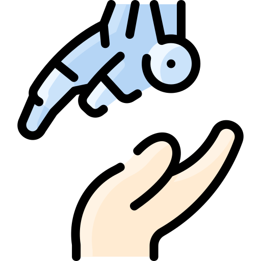
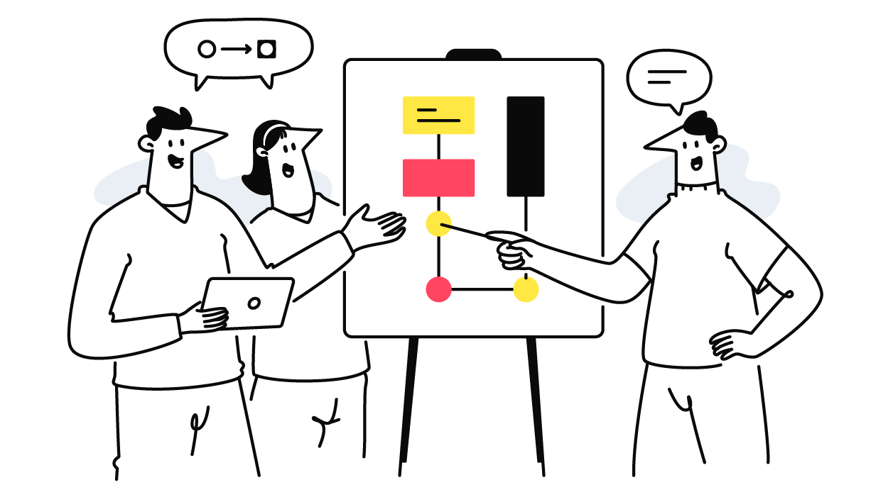

An experience-first community gathering that invites AI researchers to rethink technology through accessibility, aging, and diverse human interaction.
Date: 16 August, 2026 Time: TBC Location: TBC
Accessibility is not only a technical challenge, but a way of seeing, communicating, and designing shared futures.
Accessible Aging AI is an experience-first Diversity & Inclusion activity at IJCAI-ECAI 2026. It aims to build a welcoming community around accessibility, aging, and diverse human abilities in artificial intelligence.
This activity is not designed as a conventional technical workshop, nor is it limited to discussing the latest AI methods for accessibility and aging. Instead, it begins from a more fundamental question:
What assumptions about human ability are built into the way we design, evaluate, communicate, and deploy AI?
Through hands-on accessibility experiences, participants will be invited to briefly step outside the perspective of the "typical" user and engage with interaction realities that many disabled people and older adults face in everyday life. These experiences are intended not as simulations of another person's full lived experience, but as starting points for empathy, reflection, and more responsible design thinking.
The goal is to encourage deeper reflection across the AI community. We hope participants will increase awareness of accessibility & aging and start with several insights they can bring to their research, teaching, paper writing, figure design, interface development, public communication, and daily life.
Accessibility and aging are not niche concerns. They are central challenges for inclusive and human-centered AI.
According to the World Health Organization, more than 1.3 billion people worldwide live with significant disabilities [1], and more than 2.5 billion people need one or more assistive products [2]. With an ageing global population and a rise in noncommunicable diseases, an estimated 3.5 billion people will need assistive technology by 2050. A substantial proportion of older adults experience disability, sensory change, cognitive change, or interaction barriers. As AI becomes embedded into everyday infrastructure, the AI community must design systems that work across diverse human abilities.
Accessibility-related research is often distributed across assistive technology, healthcare AI, human-computer interaction, multimodal AI, robotics, inclusive design, and responsible AI. Accessible Aging AI brings these perspectives together in IJCAI-ECAI 2026 Diversity & Inclusion Activity.

AI systems are increasingly playing a bigger role in services, communication, healthcare, education, and public participation.
Human interaction varies across vision, hearing, speech, cognition, motor control, age, culture, and lived experience.
Inclusive AI requires interdisciplinary collaboration between AI researchers, accessibility experts, designers, users, and advocates.
The activity combines accessibility experiences, collaborative design discussions and community reflection.
Participants will engage in hands-on, low-tech interaction challenges that uncover how accessibility barriers emerge across vision, hearing, mobility, communication, aging, and neurodiverse experiences.
Building on their embodied experiences, participants will work in small groups to imagine more inclusive AI systems, interfaces, and interaction futures. The activity encourages imaginative thinking beyond technical constraints, inviting participants to design unconventional or impossible ideas that rethink accessibility from scratch.
Each group will share their reflections, adventurous concepts, and future visions with the community. The showcase creates a space for collective discussion, creative exchange, and critical reflection on how AI systems can better support diverse human experiences.

Accessible Aging AI welcomes participants interested in accessibility, aging, interaction design, AI systems, and inclusive futures. Prior expertise in accessibility research is not required.
The activity is designed as a three-hour interactive journey combining embodied accessibility experiences, inclusive design activities, and collective reflection on inclusive AI futures.
| Duration | Session | Description |
|---|---|---|
| 10 min | Welcome & Community Framing | Introduction to the goals of Accessible Aging AI and an overview of accessibility, aging, and inclusive AI futures. |
| 70 min | Embodied Accessibility Experiences | Participants engage in hands-on, low-tech interaction challenges exploring visual, auditory, motor, cognitive, neurodiverse, and aging-related accessibility conditions. |
| 20 min | Coffee Break & Informal Conversations | Open discussion, informal exchange, and time for participants to reflect on their experiences and observations. |
| 40 min | Inclusive AI Futures Lab | Small-group design activities exploring inclusive AI systems, multimodal interactions, accessibility-first interfaces, and aging-aware technological futures. |
| 30 min | Accessibility Futures Showcase | Each group shares reflections, design ideas, and possible future directions. |
| 10 min | Closing Remarks & Community Photo | Summary of key takeaways and discussion of future opportunities for collaboration and community-building around accessible and aging-aware AI. |
Accessible Aging AI aims to establish a sustainable community for rethinking how AI systems can support diverse bodies, minds, abilities, and aging experiences.
Build a welcoming space where researchers, practitioners, students, and community members can connect across disciplines and lived experiences.
Help the AI community recognize accessibility not as a minority concern, but as a central question in how people encounter, use, trust, and participate in AI-mediated systems.
Bring attention to aging, disability, cognitive and neurodiversity, communication differences, sensory experiences, mobility needs, and situational barriers in AI design and deployment.
Encourage AI systems, interfaces, datasets, evaluations, and deployment practices that treat accessibility as a starting point.
Connect perspectives from AI, HCI, accessibility research, assistive technology, robotics, healthcare, design, ethics, policy, and community practice.
Identify opportunities for future workshops, tutorials, mentorship, shared resources, research collaborations, and long-term inclusive AI initiatives.
Accessible Aging AI welcomes IJCAI-ECAI 2026 attendees interested in accessibility, aging, inclusive interaction, and future-facing AI communities.
Participation will be organized to support meaningful interaction, small-group collaboration, and a welcoming interdisciplinary environment. If interest exceeds available capacity, registration may be managed to maintain balanced participation across research areas, career stages, and backgrounds.
Postdoctoral Researcher
Multimodal & Human-Centered AI
Leibniz Centre for Agricultural Landscape Research, Germany
Email:
yutong.zhou@zalf.de
Homepage:
elizazhou96.github.io
Yutong Zhou is a postdoctoral researcher working at the intersection of multimodal AI, human-centered interaction, and inclusive AI systems. Her research explores how AI technologies can better support diverse human experiences across communication, accessibility, reasoning, and real-world interaction contexts.
Through her research, teaching, and community activities, she has become increasingly interested in how accessibility, aging, and interaction diversity are addressed within AI research communities. Accessible Aging AI is created to support more inclusive, interdisciplinary, and community-centered conversations around the future of AI systems and human participation.
Her broader interests include accessible and inclusive AI systems, multimodal interaction, empathic AI, trustworthy AI, human-centered design, and interdisciplinary AI community building.
Accessible Aging AI invites people who want to reimagine how AI systems can support diverse bodies, minds, abilities, and aging experiences.
Questions or collaboration ideas?
Please contact
yutong.zhou@zalf.de.